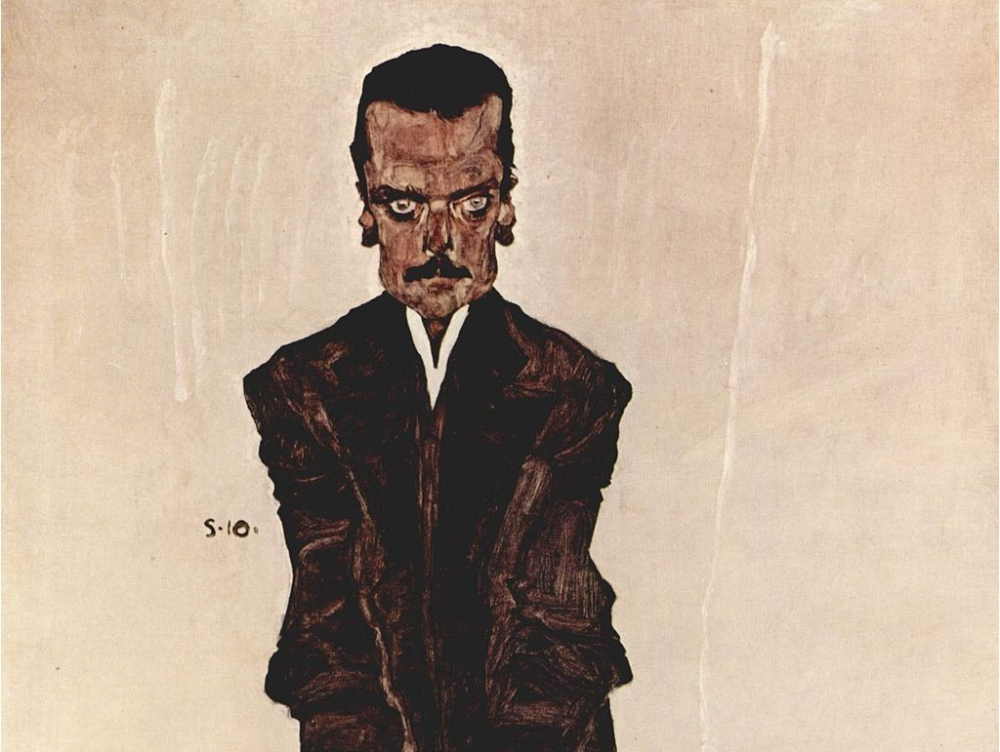

View from the dunes with beach and piers, Domburg by Piet Mondrian

Portrait of Eduard Kosmack by Egon Schiele
Definition
-
Modernism is both a philosophical and arts movement that arose from broad transformations in Western society during the late 19th and early 20th centuries. The movement reflected a desire for the creation of new forms of art, philosophy, and social organization which reflected the newly emerging industrial world, including features such as urbanization, architecture, new technologies, and war. Artists attempted to depart from traditional forms of art, which they considered outdated or obsolete. The poet Ezra Pound's 1934 injunction to "Make it New" was the touchstone of the movement's approach.
-
Modernist innovations included abstract art, the stream-of-consciousness novel, montage cinema, atonal and twelve-tone music, and divisionist painting. Modernism explicitly rejected the ideology of realism and made use of the works of the past by the employment of reprise, incorporation, rewriting, recapitulation, revision and parody. Modernism also rejected the certainty of Enlightenment thinking, and many modernists also rejected religious belief. A notable characteristic of modernism is self-consciousness concerning artistic and social traditions, which often led to experimentation with form, along with the use of techniques that drew attention to the processes and materials used in creating works of art.
Origins
-
Historians, and writers in different disciplines, have suggested various dates as starting points for modernism. Historian William Everdell, for example, has argued that modernism began in the 1870s, when metaphorical (or ontological) continuity began to yield to the discrete with mathematician Richard Dedekind's (1831–1916) Dedekind cut, and Ludwig Boltzmann's (1844–1906) statistical thermodynamics. Everdell also thinks modernism in painting began in 1885–1886 with Seurat's Divisionism, the "dots" used to paint A Sunday Afternoon on the Island of La Grande Jatte. On the other hand, visual art critic Clement Greenberg called Immanuel Kant (1724–1804) "the first real Modernist", though he also wrote, "What can be safely called Modernism emerged in the middle of the last century—and rather locally, in France, with Baudelaire in literature and Manet in painting, and perhaps with Flaubert, too, in prose fiction. (It was a while later, and not so locally, that Modernism appeared in music and architecture). The poet Baudelaire's Les Fleurs du mal (The Flowers of Evil), and Flaubert's novel Madame Bovary were both published in 1857.


{kind=link}